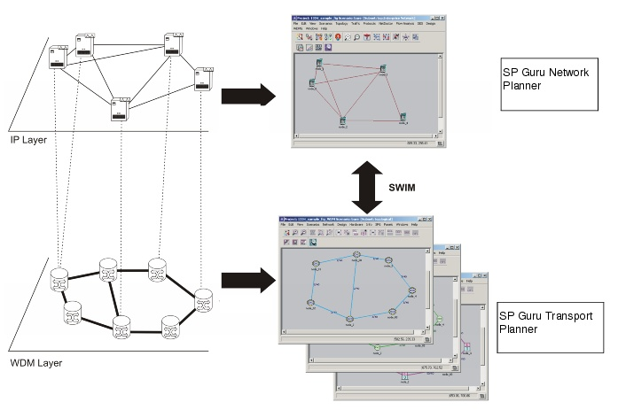

Introduction
Introduction
The SWIM (SP Guru with Integrated Modeling) product suite lets you define relationships between the Layer 2/3 networks modeled in SP Guru Network Planner and the optical networks defined in SP Guru Transport Planner. SWIM offers an integrated view of multi-layer networks in which a WDM network is the transport layer network that supports client layers such as IP networks. In this tutorial, you will learn how to use the integrated environment to design and analyze IP-over-WDM networks.
This tutorial guides you through the basic operations needed to set up an integrated project and introduces two use cases that show the capabilities offered by SWIM: designing a WDM network to support a predefined IP network, and asserting its resilience against failures.
The second tutorial focuses on multi-layer failure analysis and exploits SWIM functions to enable the assessment of various resilience strategies to provide an IP-over-WDM network that is robust against network equipment outages.
Figure 1-1 SWIM Architecture for Modeling Multi-Layer Networks

| Home © 1987-2007 OPNET Technologies, Inc. All Rights Reserved. This software may be covered by one or more U.S. Patents. See complete patent notice in the Legal Notices section. OPNET Support Center |